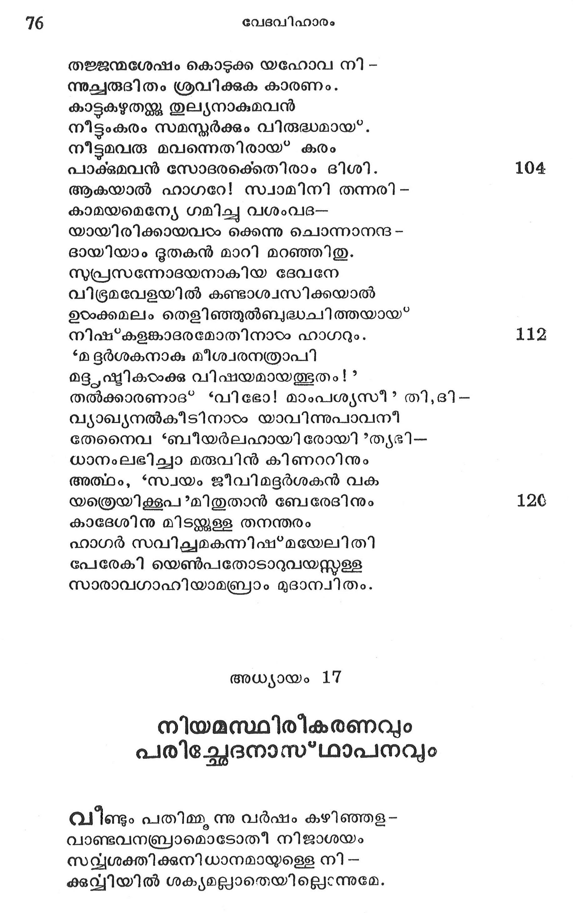

നിയമസ്ഥിരീകരണവും പരിച്ഛേദനാസ*ഥാപനവും
വീണ്ടം പതിമ്മു ന വര്ഷം കഴിഞ്ഞള-
വാണ്ടവനബ്രാമൊടോതീ നിജാശയം
സവ്യശക്തിക്കുനിധാനമായുള്ളെ നി -
ക്കവിയില് ശക്യമല്ലാതെയില്ലെന്നുമേ.

ഏകാകിയായുള്ള നിന് വംശവ്വദ്ധിയി -
ലേകതാനത്വമാര്ന്നാശ്രവം ചെയ്ത ഞാന്
ആയതിന് സാഫല്യമില്ലാതെ ഞാന് ഭവ-
ദായതി ദുഃഖമലിനമാക്കില്ലഹോ!
എന്നങ്ങിരിക്കെവേ സാറയിന്വാക്കുകേ -
ട്ടെങ്ങിനെ ഹാഗറേ സ്വീകരിച്ചുഭവാന് ?
സംപ്രേക്ഷ്യകാരിതയില്ലാതെ ചെയ്തയാല്
സംപ്രവര്ത്തിക്കും വിഷമം പലതുമേല്.
എങ്കിലും സാറയില്നിന്നു തന്നേ തവ
സന്തതിനല്കി പ്രവ്ൃദ്ധമാക്കും കുലം
എന്നു ഞാന് നിന്നോടുരയ്ക്കുന്നു നീ മമ
സന്നിധൌ നിഷ്*കാമനായി നടന്നീടുക.
കാരുണ്യവും ചെറുശാസനവും കല
ന്നാരാ ഭമല നിദമുരച്ചീടവേ
വീണുസാഷ്യാംഗമാ യബ്രാം ധരണിയി-
ലേണപോതംപോല് പ്രകമ്പിതഹൃത്തൊടും
ദീനാനുകമ്പിയാ മീശ നന൯ുതപ്പ--
മാനസനാജള്്ക്കി ടക്കുന്നൊരബ്രാമിനേ
ഗ്രീഷ്മശക്ത്യാ പര മൂഷ്മളമാം നര
വര്ഷ്്മണി വര്ഷോപലം പരിക്കുംവിധം
പുവ്വനിയമത്തിനല്ുപം പരിഷ്കൃതി
ശവ്വദമാംവിധം ചേരത്തുചൊന്നാനിദം:
പ്രാജ്യമാം ജാതിക്കു താതനാകും തവ
പുജ്യനാമം ബഹ്ുലോകപിതാവിതി
മാററുന്നു ഞാനതാലബ്രഹാമെന്നുള്ള
തുററനിന് പേരായിരിയ്ക്കുട്ടെ; സന്താന
മററമില്ാാതെ ഭവിക്കും നിനക്കുമേല്.
കൊററവന്മാരു മുളവാം ബലഘല്ഥലമായ്.
നിന്കുല ദൈവമായ തീരേണ്ടതിന്നു ഞാ-
നെൌന് നിയമം നിത്യമാക്കുവ നിക്കനാന്
തന്നീടുവന് നിനക്കും വംശജര്ക്കുമാ --
യെന്നുമെന്നേക്കു മതിന്നില്ല വാദവും.
ഇന്നിയമത്തി ന്നടയാളമായ* തവ
ലിംഗാഗ്രചര്മ്മഛിദ കഴിച്ീടണം.
നിന് ഭവനസ്ഥരാം പുരുഷരിപ്പുരു -
പുണ്യകര്മ്മത്തില് സമാംശികളാകണം.
എട്ടദിനം പ്രായമെത്തിയിട്ടളെളാരാൺ -
കൂട്ടി കഠംക്കിച്ചി ദ മേലാൽ നടത്തണം.
ആരാകിലുമിതില് സംബന്ധമില്വാതെ
പേരാണ്ട നിന് ജനമധ്യേ വസിക്കുകില്
നാരായവേരോട കൂടിയ ദൃഷ്ടരേ
പാരാതെ പാടനം ചെയ്ത മുടിക്കണം.
നിന്നുടെ ഭാര്യ സാറായിക്ക് ഞാനൊരു
മാന്യമാം നൂതനനാമ മേകീടുവന്.
പാരം കുലീനയെന്നത്ഥം വരുന്നൊരു
ഗീരാണവടം ക്കഭിധാനമെന്നാലതു
ഭുരീകരിച്ചു രാജ്ഞീതി പൊരുടംപ്പെടും
സാരാഖ്യയായവടം രാജിച്ിടട്ടെ മേല്.
ആശിസ്റ്റവഠംക്കു ഞാനേകുക കാരണം
വൈശിഷ്യമുളെളാരു പുരരനുണ്ടാ,മവഠം
നാനാന്വയാദിമാതൃത്വം വഹിച്ചിടും.
രാജാക്കളമവളി ല്നിന്നു ജാതരാം
ഉഈഹത്തിനപ്പുറമായ? പരനീവിധ -
മീഹാനുക്ലം വചിചതു കേടംക്കവേ
ദ്വാപരഹാസസമന്വിത മബ്രഹാം
ഭൂമൌ നിപതിച്ചു ദുര്ല്ലംഘ്ൃമാകിയ
ജാരഠ്യ മോര്ത്തു ചൊന്നാൻ? മകനിഷ*മയേൽല്
നീരോഗനായിരുന്നാകില് മതി; വിഭോ!
ഉത്തമനോതിനാ നങ്ങനെയല്ല നിന്
പത്നിയാം സാറയില് പത്രനുണ്ടാം തവ.
ഇസ*ഹാക്കിതി നാമമേകണം നീയവ -
ന്നാശ്രവം നല് കുമവന്നു ഞാന് പ്രിതനായ്.
ഇഷ് മയേലും മമാനുഗ്രഹ പാത്രമായ”
വിസ*തൃതജാതിയായ് ത്തീരുമെന്നാകിലും
ഭേദ്ൃയമല്ലാതുളെളാരെന് നിയമത്തിന്നു
പാത്രമിസ*ഹാക്കാണതിന്നില്ല സംശയം.
ഇത്ഥം പറഞ്ഞു പരന് മറഞ്ഞോരള
വൃത്തമ നബ്രഹാം വസ്ത്ൃയത്തിലുള്ളൊരു
പുരുഷന്മാരേ സകലരേയും പര--
മേരിതസംശ്രവ ത്തിന്നടയാളമാം
ലിംഗാഗ്രചര്മ്മഛിദ കഴിച്ചു സ്വയം
സംഗിയായ” കര്മ്മ മതിലും യഥാവിധി.
അബ്രാമിനിപ്പൊഴുതുനശതം വയ-൦
സ്റ്റീഷ*മയേലിന്നു പതിമ്മു ന്നുമാണഹോ!
ഇഗ*ഘട്ടമത്രേ പരിച്ഛേദനന്ക്കുവന്
കീഴപെട്ടതോര്ത്താല് മുഴുകുടുംബത്തൊടും.